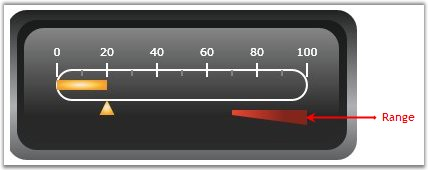

Ranges are objects that highlight a range of values. Ranges are customized by using various attributes such as RangePosition, DistanceFromScale, StartWidth, EndWidth, and so on.
The following code example illustrates how to add Ranges to the Linear Gauge.
|
[XAML]
<syncfusion:LinearScale.Ranges> <syncfusion:LinearRange Background="Red" RangePosition="Outside" DistanceFromScale="10" StartWidth="5" EndWidth="15" StartValue="70" EndValue="100" > </syncfusion:LinearRange> </syncfusion:LinearScale.Ranges> |
|
[C#]
LinearRange linearrange = new LinearRange(); linearrange.StartWidth = 5; linearrange.EndWidth = 10; linearrange.StartValue = 70; linearrange.EndValue = 100; linearrange.DistanceFromScale = 5; linearrange.Background = new SolidColorBrush(Colors.Blue); linearrange.RangePosition = ScalePlacement.Outside; linearscale.Ranges.Add(linearrange); |

Figure 86: Range added to the Linear Gauge